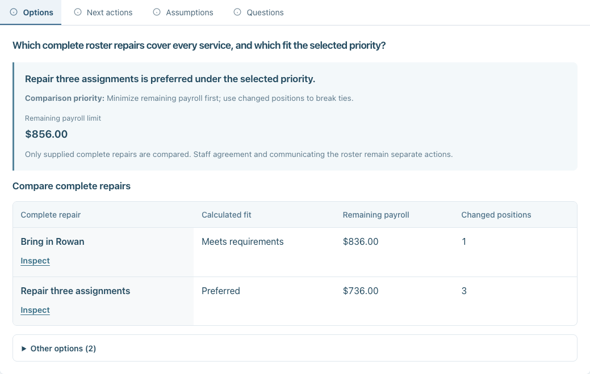

Two workable responses can leave a manager with a harder question: which trade-off should we accept? A restaurant can restore its published roster with less disruption or less payroll. A shipment can use a cheaper provider once the evidence supports using it. Both comparisons need a clear account of what qualifies and what should take priority.
The Make a Bounded Commitment pattern starts with complete proposals and explicit operating limits. These fictional examples examine the preference comparison that can follow: how to distinguish a change in priorities from a change in which proposals are feasible.
Separate feasible, preferred and chosen.
A feasible proposal meets the declared requirements under the accepted operating basis. A preferred proposal compares favorably with the other feasible proposals under a declared policy. The chosen proposal is the one a responsible person authorizes. A calculation can support that choice without making the commitment for them.
Those distinctions matter when a result changes. A different priority can favor a different feasible option. New evidence can instead admit an option that previously lacked support. The final label may look similar, but the reasons require different explanations.
An assessment can also establish feasibility without applying a ranking policy. “Unranked” does not mean that every option is equally good. It means that this assessment has not compared their desirability. A tie is a separate result: the declared criteria leave the compared proposals equal.
One roster, two defensible priorities.
In the restaurant roster example, Elena must repair a published week after Nora’s cancellation. The four supplied repairs face the same qualification, availability, coverage, rest, hours and non-overlap requirements, with an $856 remaining-payroll limit. Two complete repairs qualify when Rowan is available for the full 6–10 p.m. shift.
The relief repair brings in Rowan. It changes one published position and produces $836 remaining payroll. The coordinated repair moves Theo to Saturday cooking, Ben to Sunday cooking and Ava to Sunday serving. It changes three published positions and produces $736 remaining payroll.
The common retained payroll is $656 after removing Nora’s cancelled unpaid shift. The repairs therefore add $180 and $80 respectively. These figures cover the remaining roster; they exclude payroll from earlier in the week.
With stability first, Elena compares the number of changed positions before payroll. Rowan’s repair is preferred because it changes one position rather than three.

With cost first, Elena compares remaining payroll before changed positions. The coordinated repair becomes preferred at $736. The staff, operating requirements and two feasible repairs stay the same; only the order of the comparison criteria changes.


Elena chooses stability for this already published week: she accepts $100 more payroll to avoid two additional changed positions. That is her management judgment. The assessment does not establish that the result is fairest, obtain staff agreement or publish the roster.
A cheaper shipment needs supporting evidence.
In the Marketplace shipment comparison, Maya compares Direct at $4,000 with Backup at $6,000. The declared priority is cost first. Direct requires current registration confirmation covering the relevant scope.
Before confirmation, the operating basis admits both registered and unregistered situations. Backup is supported across both. Direct cannot be treated as an unconditionally supported commitment merely because its quote is lower.
A genuine current confirmation changes Direct’s eligibility. Once it qualifies, the existing cost-first policy prefers its $4,000 quote.

This is a different cause of change from Elena’s priority switch. Maya receives evidence that changes what can responsibly enter the comparison. She does not adopt a new preference policy.
Compare the reason for the change.
| Question | Restaurant roster | Shipment arrangement |
|---|---|---|
| What stays fixed? | The supplied repairs, payroll figures and operating requirements. | The quotes, operating requirements and cost-first policy. |
| What changes? | Which criterion takes priority: stability or payroll. | Whether current evidence supports Direct’s registration requirement. |
| Why does preference change? | The same feasible repairs are compared under a different policy. | A cheaper option becomes eligible under the existing policy. |
| What remains mandatory? | Coverage, qualifications, availability, hours and payroll limits. | Current scoped confirmation and the other shipment requirements. |
A preference cannot repair a failed requirement. If Rowan is available only until 8 p.m., the full-shift relief repair becomes ineligible however strongly Elena values stability. Direct’s attractive price likewise cannot substitute for its required confirmation.
Adapt the policy without hiding the conditions.
The reusable structure is to establish the qualifying proposals and then compare their consequences. The domain supplies the meaning of both steps. Changed published positions matter to this roster; quoted shipment expense matters to this freight comparison.
A priority order is one way to express a policy. It does not imply that every consequence has been converted into money. If a different situation needs a weighted trade-off, its exchange rates need their own justification. If the criteria leave a tie, retain it until an explicit further policy or human decision resolves it.
The findings concern the supplied complete proposals and accepted facts. They do not prove that no better unmodeled roster or carrier arrangement exists. A change to availability, scope, quotes or other operating facts calls for reassessment before relying on an earlier preference.
Make the result explainable to the person choosing.
Before adapting the preference assessment to another situation, make four things explicit:
- Which complete proposals qualify, and which requirements establish that result?
- Which consequences are compared, in what units and with what scope?
- Which priority order or trade-off policy applies, including how ties are handled?
- Who can authorize the choice, and which changed facts require a new assessment?
The useful explanation connects the outcome to its cause. Elena can say that stability justified the extra payroll. Maya can say that current confirmation made the cheaper shipment eligible. Each can then make the final commitment with the relevant trade-off visible.